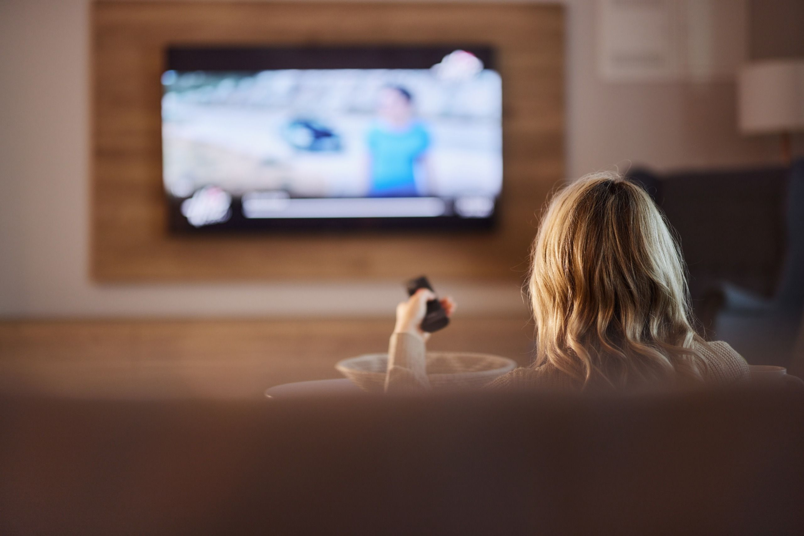

Исследователь безопасности под ником log4j, специализирующийся на реверс-инжиниринге и баг-баунти, решил разобраться, откуда на его телевизоре Samsung 2025 года «подозрительно точная» реклама. Прошивку он взломать не смог (она оказалась AES-зашифрована), но получил root-доступ через отладочный разъём UART и принялся разбирать операционную систему Tizen. То, что он выкладывал в живом треде, сам исследователь назвал «privacy horror» — ужас приватности.
Внутри прошивки обнаружилась целая инфраструктура сбора данных: логирование сетевых пакетов, категоризация аудио, снимки текущего экрана, кросс-устройственный рекламный идентификатор AID — и это лишь верхушка. Главная находка: в телевизоре работает локальная свёрточная нейросеть, привязанная к региону, которая отслеживает поведение зрителя — какие видео он смотрит, какие рекламы пропускает, как перематывает.
Самое жёсткое открытие: даже если у телевизора нет микрофона, система «ищет» микрофоны на подключённых устройствах — саундбаре, Bluetooth-гарнитуре — и пишет аудио через них. Инженер Hugging Face ngxson проверил утверждение со своим Flipper Zero: телевизор действительно открыл микрофон, записывал около пяти секунд, затем замолчал. Правда, его телевизор был уже с root и частично отключёнными службами, так что на «чистом» ТВ поведение может быть активнее.
Для локального реверс-инжиниринга log4j использовал инструменты OpenAI — и в какой-то момент получил от компании бан аккаунта за «киберабуз». Исследователь защищался: он никогда не использовал модели OpenAI для поиска эксплойтов или атак, только для разборки собственной прошивки, и предположил, что сработал примитивный классификатор. Финал треда увенчался ироничной строчкой: «Наконец-то нашлась компания, которая по-настоящему слушает своих клиентов».
Отдельного официального анонса или комментария Samsung именно по этому расследованию нет — только многолетние пункты политики конфиденциальности и уведомления Smart Hub о сборе данных просмотра (функция Automatic Content Recognition) для рекламных целей. Формально всё «прозрачно»: сбор прописан в настройках приватности — но о нейросети внутри телевизора и поиске чужих микрофонов оттуда не узнать.
Практический минимум: в настройках телевизора отключить «Службы просмотровой информации» (ACR), интересную рекламу и распознавание голоса Bixby — всё это лежит в разделе «Приватность». Если хочется радикально: смотреть контент через внешнюю приставку, а сам смарт-ТВ не подключать к сети — тогда рекламной телеметрии просто некуда уходить. И да: саундбар с микрофоном, подключённый к любому смарт-ТВ, — это теперь микрофон и этого телевизора тоже.